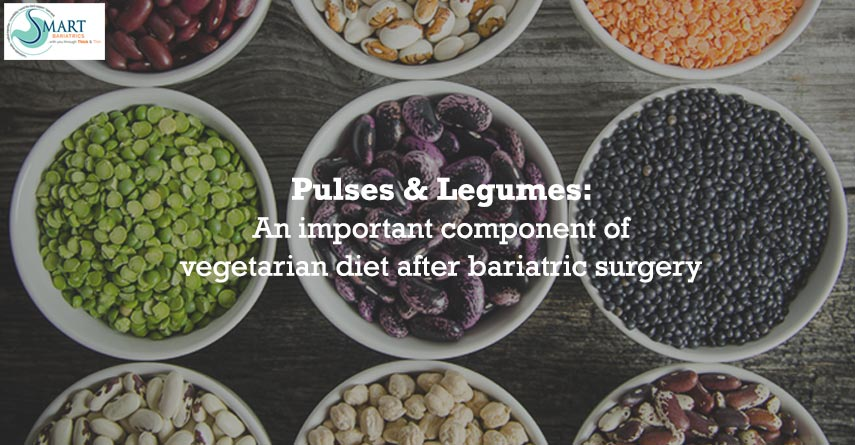

The Role of Pulses and Legumes in Post-Bariatric Surgery Diet: A Guide for Vegetarians
Post-Bariatric surgery diet demands good quality protein intake. India is predominantly a vegetarian country, so pulses and legumes have become an essential part of the Indian diet, to fulfill daily protein needs. Apart from providing proteins, pulses also exhibit many nutritional values. Pulses are edible fruits or seeds of pod-bearing plants. Various varieties of pulses are available and are being used in various ways. Legumes (rajma, chholey, chana, lobia), husked-whole pulses (moong sabut, masoor sabut, and urad sabut dal), and dehusked pulses (moong dhuli, masoor dhuli and arhar dal) are an important part of every Indian kitchen.
Pulses: The Primary Source of Protein
Especially in a vegetarian Indian diet, pulses are the primary source of protein. The calorie content of pulses per 100g is almost similar to that of cereals but they give about 20 to 25% protein which is double the amount of protein compared to cereals. The per 100 g calorie value ranges between 315 to 372 Kcal and protein content ranges from 17 to 25 g/ 100g, legumes are generally rich in proteins and high fibre. Pulses contain calcium, iron, magnesium, zinc, potassium, and phosphorus. Legumes are an excellent source of B-complex vitamins. Antioxidant levels are highest amongst Rajmah and Soyabean.
Nutritional Benefits of Pulses
Pulses generally generate a low rise of blood sugar, due to their low glycemic index and provide more satiety than cereals due to the high protein content. During sprouting nutritive value is improved. Raw pulses do not contain vitamin C, however, it is synthesized during sprouting, as much as sprouts can be substituted for fruits. Germination enhances the concentration of n-3 and n-6 fatty acids, specially linoleic and linolenic acid, and also PUFAs (polyunsaturated fatty acids) like EHA and DHA. Cowpeas (lobia), black gram (urad sabut dal), and Bengal gram (kala chana) help in lowering high cholesterol levels.
Fermentation and Its Benefits
Fermentation of pulse-based batters, like for idli and dhokla, improves nutritional value by increasing vitamin C and B-vitamins. It also improves the availability of essential amino acids. Phytates present in legumes may play a protective role in reducing colon and breast cancer risk. Isoflavones present in Bengal gram may help reduce serum cholesterol levels if consumed over several weeks. Cluster beans (guar ki phalli) have been shown to reduce plasma cholesterol and improve blood sugar levels, with the help of guargum, a gel-forming galactomannan polysaccharide present in it.
Daily Inclusion of Pulses
One medium katori-cooked pulses and legumes provide 4 to 6 g protein and 2 serves should be included daily in the diet. The inclusion of different variations like cooked pulses, sprouts, pancakes, cheelas, dhokla, kadhi, and sambhar can make your daily diet after bariatric surgery interesting and variety full. Keep control over using oils and fats while cooking pulse-based preparations to keep a check on total calorie intake. After bariatric surgery, vegetarian patients should use pulses and legumes more frequently to meet protein requirements.
Having more doubts regarding which diet to follow after bariatric surgery? Consult today with the best bariatric surgeon in Delhi at Smart Cliniqs.
Back to Blog